About Me
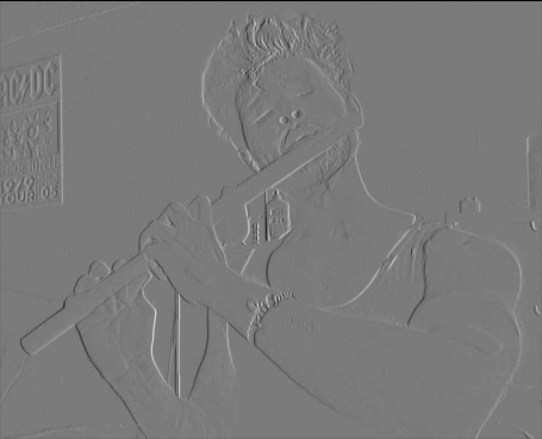
Robotics, Computer Vision, Machine Learning, Generative AI
I'm currently pursuing MS in Robotics focusing on Machine Learning and Computer Vision at Arizona State University. Prior to this, I worked three years at Suzuki Motors as an Assistant Manager(Robotics Engineer). My interest lies at the intersection of Robotics, Computer Vision, Deep Learning and Generative AI.
Currently, I'm working on two research projects:
1) "AI-Powered Vision System for Bicyclist Counting in Tempe City using Self-Supervised Reidentification"
2) "Learnable Geometry for Collision Detection and Robot Manipulation" under the guidance of Prof. Wanxin Jin at IRIS lab .
In my spare time, I enjoy dancing (Hip-Hop and break), painting, and delving into books on psychology, neuroscience, robotics,and AI, star gazing, parkouring, calisthenics.
Open Source Contribution
Machine Learning Research Engineer
● Implemented the “cummax” function within PyTorch frontend, which was subsequently merged into their official codebase.
● Utilized Pytest to conduct thorough testing and validation of the implemented algorithm, using Pycharm IDE on Ubuntu.
Work Experience
Assistant Manager (Robotics Engineer)
● Proficient in Online and Offline Robot programming for 6-axis painting robot and SGC(Stone Guard Coating) robot using
teach pendant and Tecnomatix Process Simulate software.
(Models:- EPX2800, MPX3500 & IRB5500, Controller:- NX100, DX200 & IRC5P, Manufacturers:-Yaskawa & ABB, Type:- wall-mounted & floor-mounted 6-axis robot).
● Worked closely and seamlessly with suppliers, maintenance, and production teams from design prototype to production prototype phase to ensure paint finish quality within Suzuki standards.
● Achieved a cost-saving of Rs 2.57 million/annum by optimizing robot teaching trajectories (changed the robot trajectories from along-the-conveyor to across-the-conveyor) and robot parameters, using machine learning algorithms to analyze and refine trajectory data.
● Achieved the DFT (painting coat) values on BIW from 46% to 71% within the tolerance of ± 2μ from the mean DFT value by implementing a new robot teaching trajectory and optimizing pitch of robot teaching stroke & robot parameters.
● Extensive experience in robotics mechanical and electrical troubleshooting, synchronization of conveyors and robots.
● Successfully integrated computer vision systems for quality control and inspection (roof ceiling caps), enabling real-time defect detection on the production line.
Education
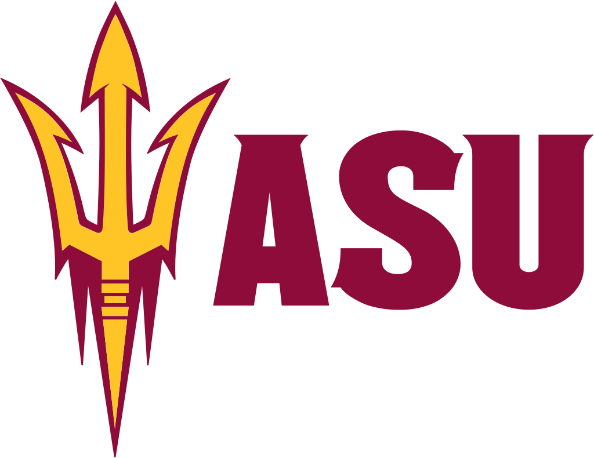
Arizona State University
M.S in Robotics
Jadavpur University
B.E in Industrial Engineering
Publications & Certifications
International Conference on Computational Science and Computational Intelligence(i3CE), CMU
"AI-Powered Vision System for Bicyclist Counting in Tempe City using Self-Supervised Reidentification"
● Abstracts Submitted
International Conference on Computational Science and Computational Intelligence(i3CE), CMU
"Benchmarking Neural Networks for Fine-Grained Image Classification with Low Object to Image Ratios in Traffic Imagery Dataset"
● Abstracts Submitted
Applications of AI for Anomaly Detection
● Worked on XGBoost, Autoencoders, GANs. View Certification
Projects
Details of the projects are under construction.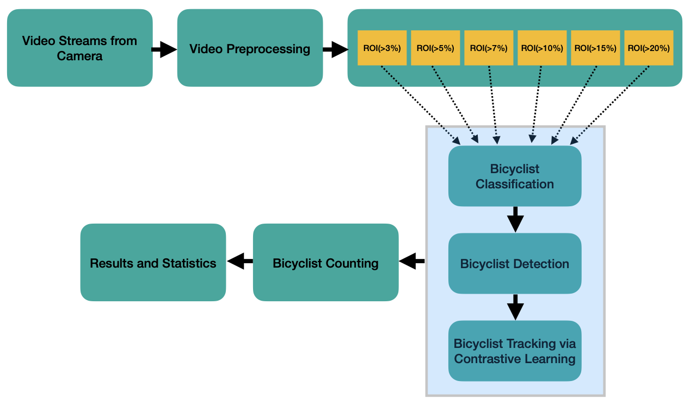
AI-based Vision System for Bicycle Counting in Tempe City
Traditional bike counting methods have limitations, from assumptions about bike dimensions to high costs. Enter our solution—motion-sensitive cameras at just $80 each, boosting accuracy, cost-efficiency, and adaptability. Using cutting-edge computer vision and contrastive learning, we offer precise counting, even in complex traffic scenarios. Deployed over 27 locations in Tempe, our approach includes classification, cyclist detection, and innovative methods like semi-supervised Siamese networks with attention mechanism. Keywords : Resnet18, convnext_small, vit_base_patch32_384, YoloV8n, YoloV8l, DETR, Siamese Network, Human-in-Loop
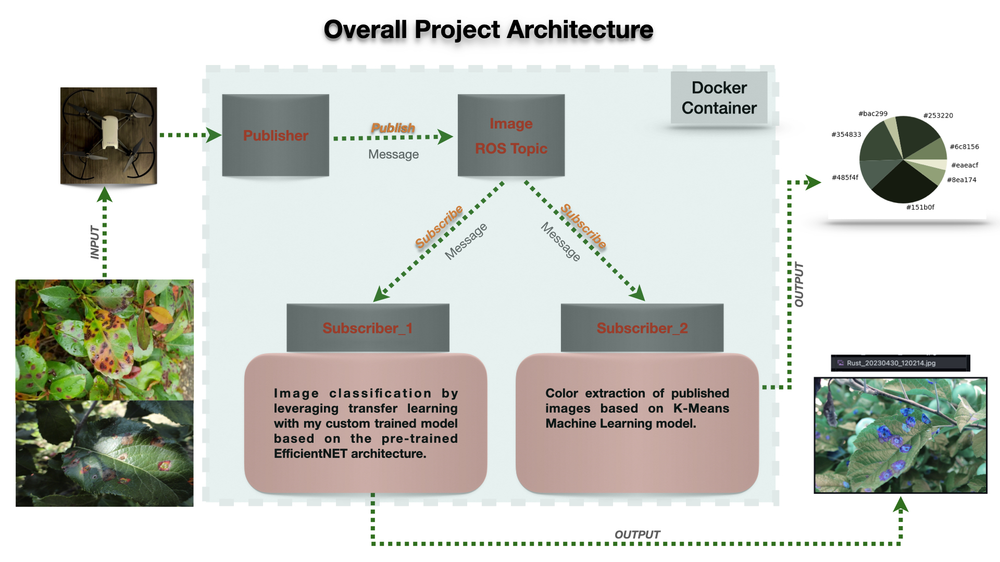
Robotics-AI in Agriculture
This project represents a small part of my personal goal, aiming to address agricultural losses by enhancing the entire farming process, from cultivation to distribution, through the integration of Robotics, AI, and Operations Research for optimizing resource allocations. In this project, I have developed a publisher node to capture video from a Tello drone and publish this information to a ROS topic. Subsequently, Subscriber 1 and Subscriber 2 retrieve these messages. In Subscriber 1, a Machine Learning model classifies plant diseases using Transfer Learning. In Subscriber 2, I have implemented K-Means Clustering to extract the top 8 colors of plant leaves, serving as a verification mechanism if the model encounters any issues.

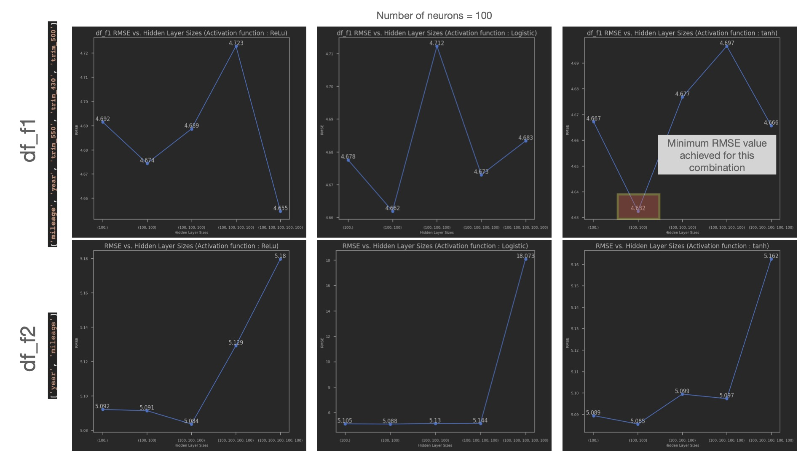
Machine Learning & Deep Learning Prediction
Performed extensive analysis on used car dataset, comparing regression models like linear regression, Lasso, Ridge, decision tree, random forest, gradient boosting, and neural networks, and evaluating key metrics. Neural network model achieved superior performance but required extensive hyperparameter tuning and computational resources. In contrast, linear regression performed well with limited resources, minimizing tuning needs.
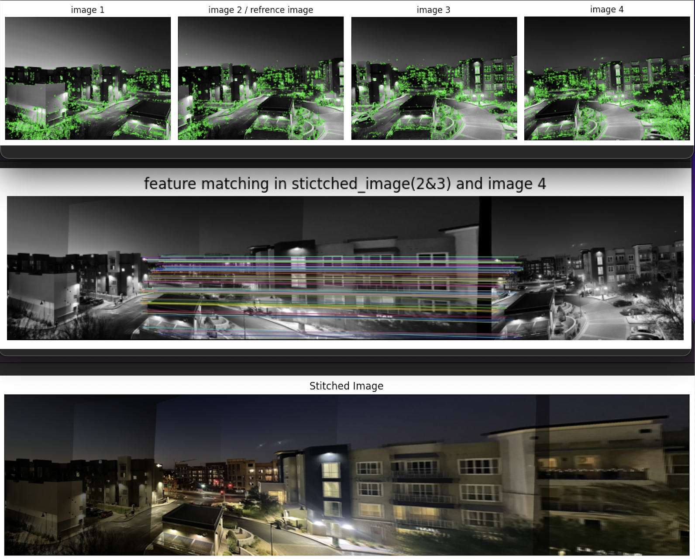
Image Alignment and Stitching
Created a panorama by detecting keypoints and descriptors using the SIFT detector, refining feature matches with Lowe's ratio as described in the paper (http://matthewalunbrown.com/papers/cvpr05.pdf) , and removing outliers with RANSAC to obtain robust homographies for accurate image alignment. The subsequent warping of images has been accomplished using OpenCV functions.
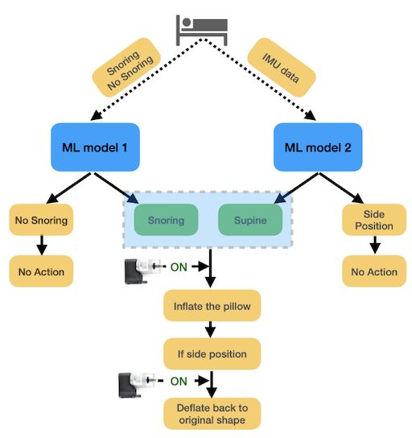
SnoreGuard: ML-Powered Pillow for Snore Detection and Sleeping Posture Correction using TinyML
In the U.S., insufficient sleep and related disorders lead to an annual economic loss of $411 billion, comprising 2.28% of the GDP. To address snoring, our embedded ML system detects the snore and supine position, triggering a mini compressor to inflate/deflate the pillow to encourage the snorer to shift from supine to the side position.
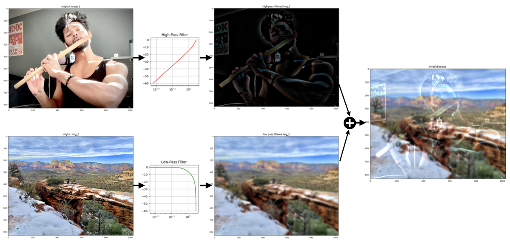
Hybrid Image
Implemented a technique for generating hybrid images as described in the paper (http://olivalab.mit.edu/publications/OlivaTorralb_Hybrid_Siggraph06.pdf) by seamlessly blending two distinct spatial scales. This process involves filtering one image with a high-pass filter to obtain its high-spatial scale and filtering a second image with a low-pass filter to acquire its low spatial scale. The final hybrid image is meticulously composed by adding these two filtered images.
Custom Star Generation using DCGAN
Created a star dataset of different colors, oreintation and size using OpenCV. Then, Implemented a Deep Convolutional Generative Adversarial Network (DCGAN) model for star generation as described in Goodfellow’s paper.(Implementation of Min-Max adversarial loss funtion).
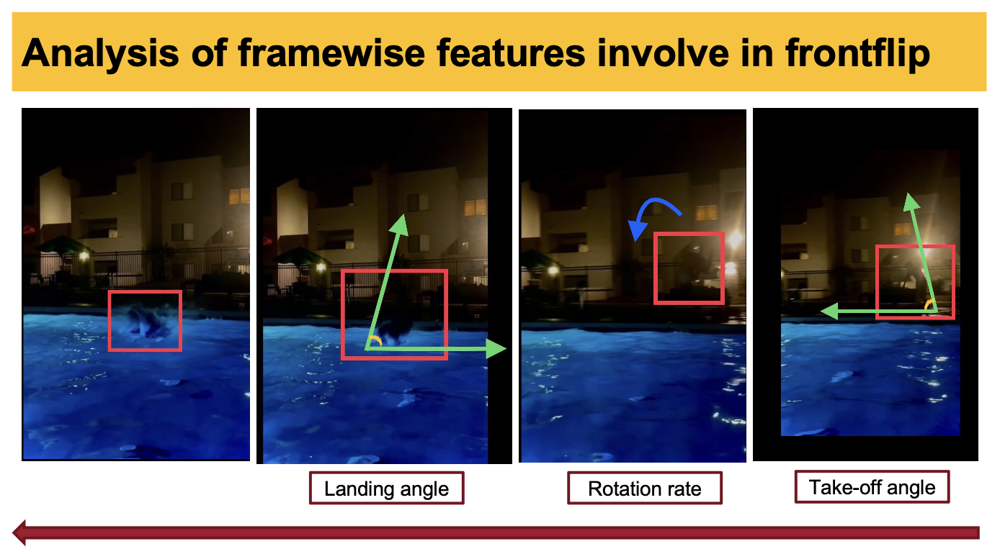
Frontflip Correction using TinyML
"Turning failures into success! After 37 attempts, I mastered the front flip into a pool. Now, I'm engineering a solution using Arduino Nano BLE Sense and a Machine Learning. Imagine real-time feedback—vibrations guiding your takeoff, rotation rate, and landing angles. This journey from belly flops to perfect flips inspired a tech twist.
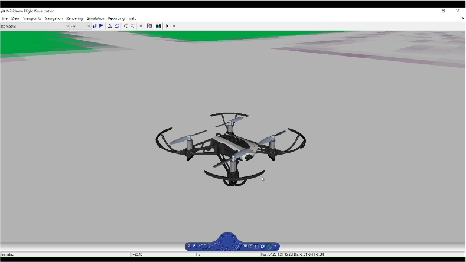
State Space Modeling, Control and Simulation of Drone
This study investigates quadcopter drone dynamics in 3DOF (rotational) and 6DOF (translational and rotational). Open-loop analysis assesses controllability, observability, and stability. Closed-loop controllers are designed for Z-direction altitude control. Results inform the distinct properties of each system and provide practical insights for enhancing drone control.
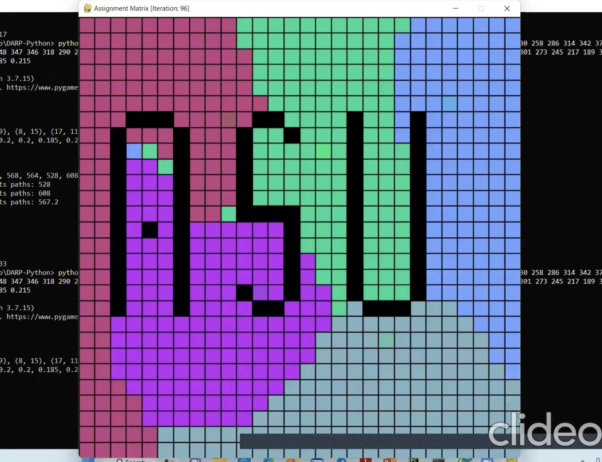
Multi-Robot Planning and Area Divison using DARP & STP
Developed robot controller code for collision free exploration and DARP algorithm for optimal area division. Performed the tests and simulation using Python, conducting multiple iterations to tune the hyperparameters and achieve optimal convergence for the algorithm.

NeRF Implementation
Resume
Inspiration
You need to learn how not to be careful!
Everything is relative in this world. We come from different cultures, family environments, educational backgrounds, languages, and locations. These factors collectively shape the foundation of how we think, analyze information, and make decisions. As we grow, our decision-making system's base varies significantly. Consequently, people's perspectives differ due to these diverse influences. Therefore, nothing can be deemed absolute in this world.
I have always enjoyed being around machines; that's how I first immersed myself in robotics. Initially, I would compare robots to human beings. The significant shift occurred when I transitioned from the "campus" to the "corporate world." During this phase of my journey, I started to think in a reverse way, comparing humans to robots.
It was then that I began to notice simple yet overlooked aspects. For instance, I started viewing human eyes as optical sensors within a closed-loop system. Upon learning about Neural Networks, I began to see the human brain in a similar light, recognizing parallels with our decision-making system.
This perspective shift allowed me to understand myself better than ever before. Now, I approach self-reflection through a lens of reverse engineering to gain a deeper understanding of human beings in general.
I still had that one question " What is the meaning of life". I knew there is no perfect answer but I couldn't ignore it. Second Transition, When I got to know about the "Sushant Singh Rajput". From him, I learnt the thin connection between "Science" & "Art". This helped me to boost what I think and convinced myself why I do and should do.
Because of him, I got answers of my questions. This way, I am now interested into Robotics, Neuroscience, Psychology, Computer Vision, Deep Learning and AI. Professionally, I want to work at the interestion of Robotics, Computer Vision and Deep Learning.
Contact
Location:
Tempe, AZ 85281
Email:
dheryarobotics27@gmail.com
dkumar42@asu.edu